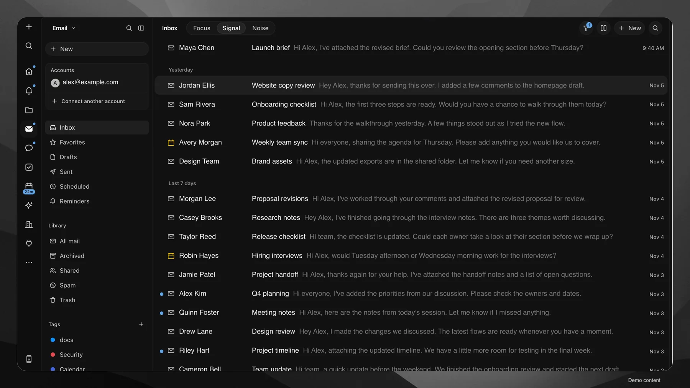
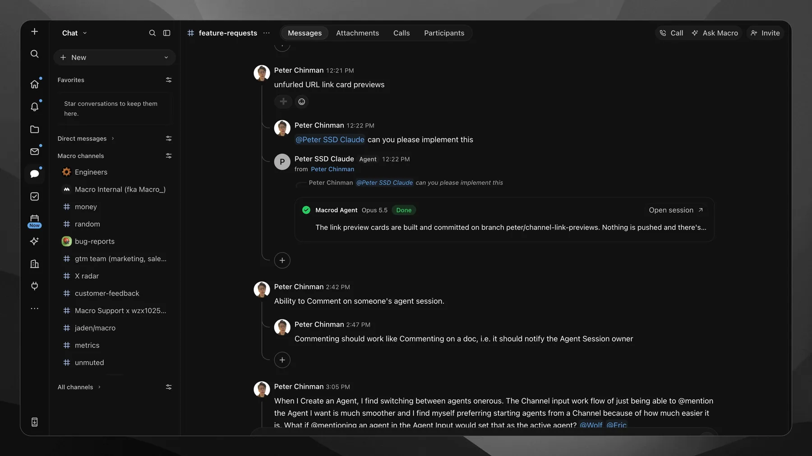
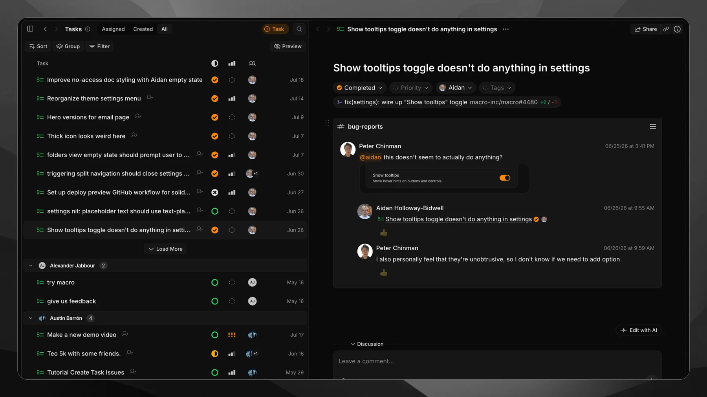
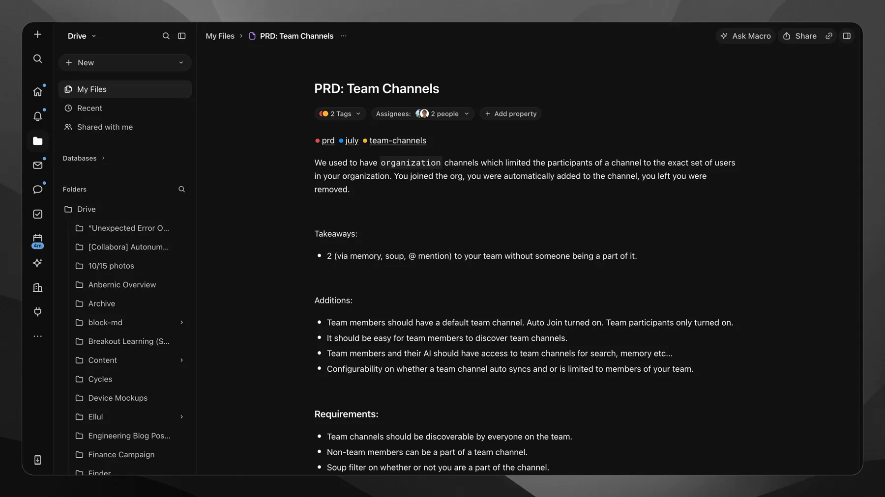
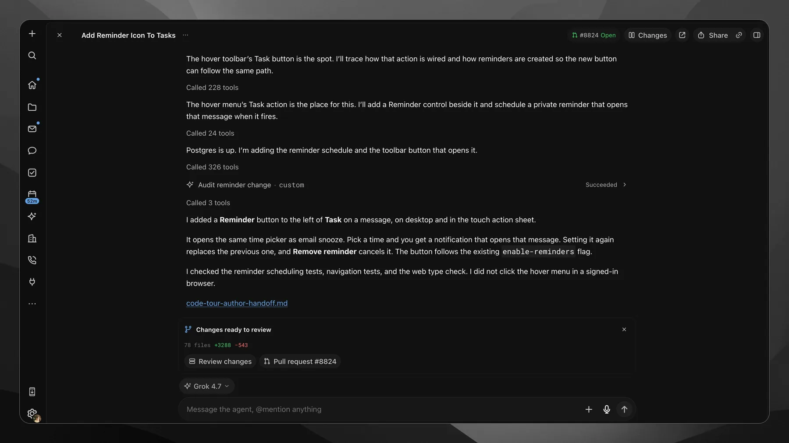
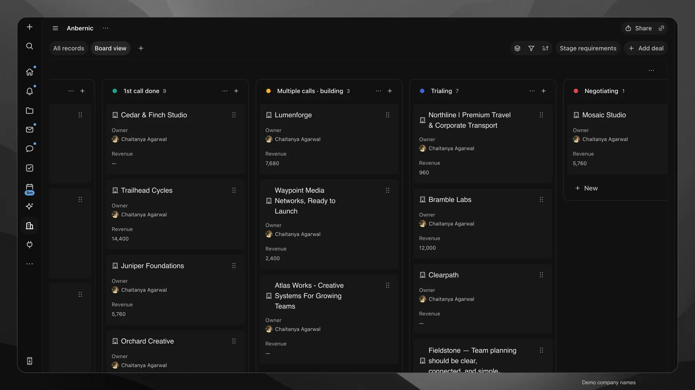
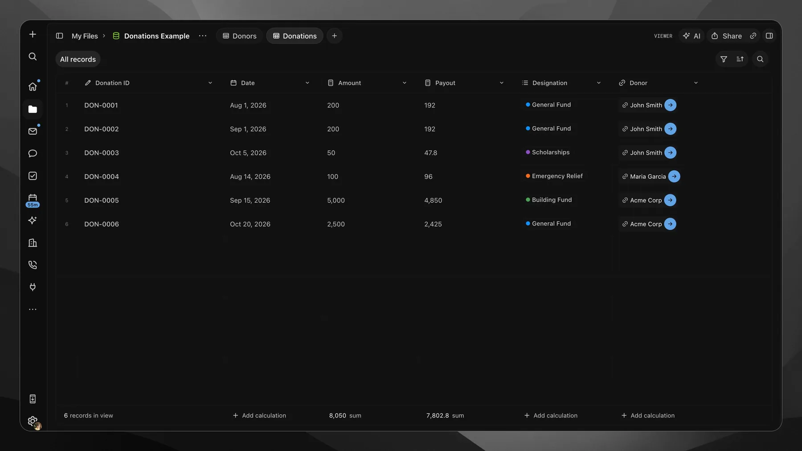
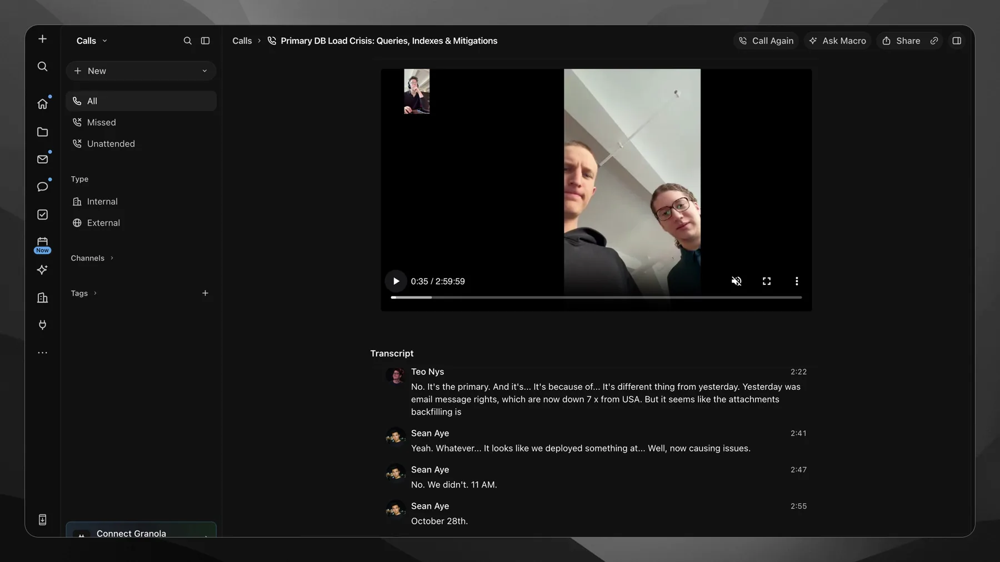
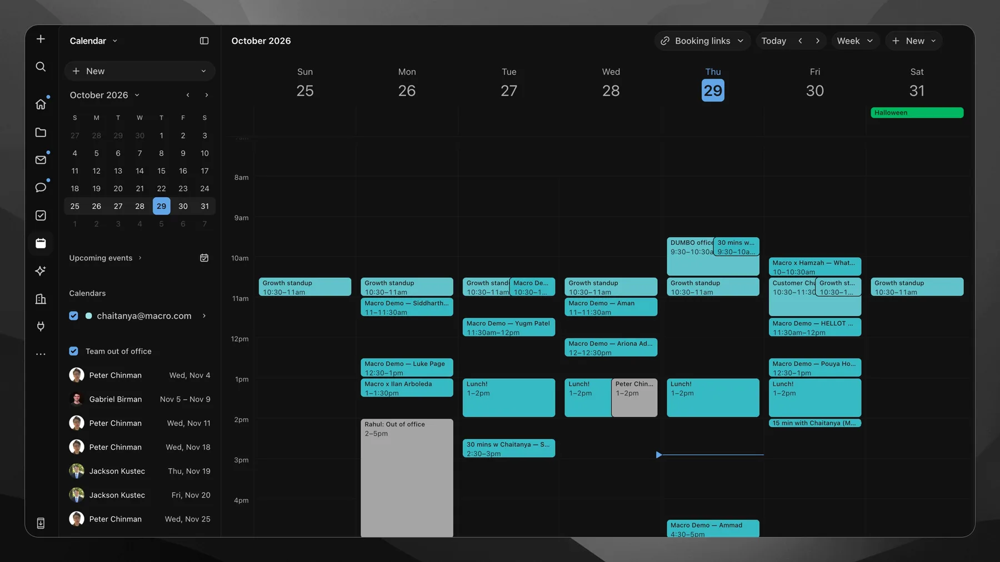

CSV export drops the timezone column
Tim Reyes · Acme
Hi team, since Tuesday our exported CSVs are missing the timezone column. Our finance import depends on it. Can you take a look?
Macro is one workspace for your team's email, messages, docs, tasks, calls, CRM and agents. Mention anything from anywhere and both sides keep the link. Your agents work from the same context you do.
Tim Reyes · Acme
Hi team, since Tuesday our exported CSVs are missing the timezone column. Our finance import depends on it. Can you take a look?
Reading Keep timezone column… and the email it came from.
Called 6 tools
The column was dropped when the export moved to streaming. I restored it and added a test.
I also drafted a reply to Tim for you to review.
Each Block is purpose-built for its job. They all share one backend, one search, one permission model and one graph of links.









Also built in: Canvas, Drive, pull requests, spreadsheets, forms, snippets, routines and skills. Read the docs
Macro stores references as a graph. Open any record and you can see every conversation, task and file that points at it.
Stage Trialing Owner Dana Domain acme.com
Mentioned in · 5Mention a doc in a message and both know about each other. You can follow the chain from the customer email to the task to the pull request.
Anything you mention in a channel is shared with its members. Join a channel and you gain access. Leave and you lose it.
Macro builds memory from email, messages, tasks, docs and calls across your team. It refreshes every night.
Emails, channel messages, task assignments, mentions and agent replies arrive in one list.
Agents in Macro can search your workspace, write docs, draft email, update tasks and open pull requests. They can only see what you can see.
Start a chat, mention @Macro in a channel, or
assign a task.
Connect Cursor with your own API key, or bring agents running on your own machine into Macro through macrod.
Run work on a schedule or when something happens in your workspace.
Save reusable instructions so you explain a process once.
$ claude mcp add --transport http macro https://mcp-server.macro.com/mcpWorks with Claude Code, Codex and any MCP client. MCP setup
Macro is built in SolidJS and Rust. The same keys move you through email, messages and tasks, and a built-in window manager gives you three or more splits on a large monitor.
Move down and up any list
Archive and move on
Create a task from anywhere
Start an agent chat
Go to Home
Search the whole workspace
Insert a saved snippet
Open the item in a new split
Try them. The keys on this page light up.
Connect the tool, tell the Macro agent what to import, and review its plan before it creates anything. You can move one project first.
| Notion | Pages become docs, in folders that keep the page hierarchy. Databases keep their rows and relations. Task trackers become tasks. |
|---|---|
| Linear | Issues become tasks. Teams, projects and initiatives become projects. Your Linear workspace stays unchanged. |
| Slack | Channels are recreated with the members already on your Macro team. This brings names and membership, not messages. |
| Gmail and Outlook | Connect the account. Macro syncs with it directly, so your mail and history are already there. |
| Everything else | Use MCP. Connect the tool's MCP server and ask an agent to bring over the work you need. |
Pro is a flat price per seat with every Block included. Plans differ in models, AI usage, connected email accounts and storage.
$40 per seat / month
$200 per seat / month
Prices in US dollars.
Your company runs on this, so you should be able to inspect it.
Macro is open source under the AGPLv3. Read the code, run it locally, or contribute.
Review our controls, policies and subprocessors, and request the documents you need for a security review.
You can run Macro on your own infrastructure. Certifications for the hosted product do not cover your own deployment.
We used Slack, Linear, Notion, HubSpot and Superhuman. They are good products, but they do not work together as one system.
As our last company grew to about 20 people, every team got its own tools, and the company was held together by MCP and Zapier.
The company was not computable.
Macro is a redesign of work software from the ground up as a single system. Our team of about 15 has run on it for two years.
The Macro team, New York and Toronto